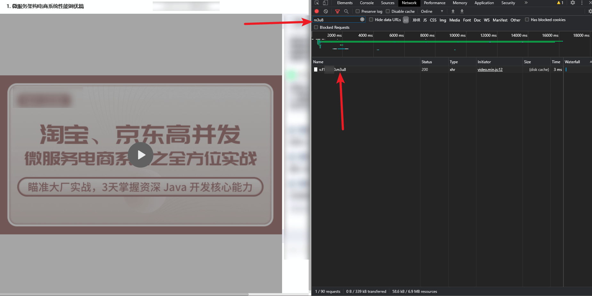
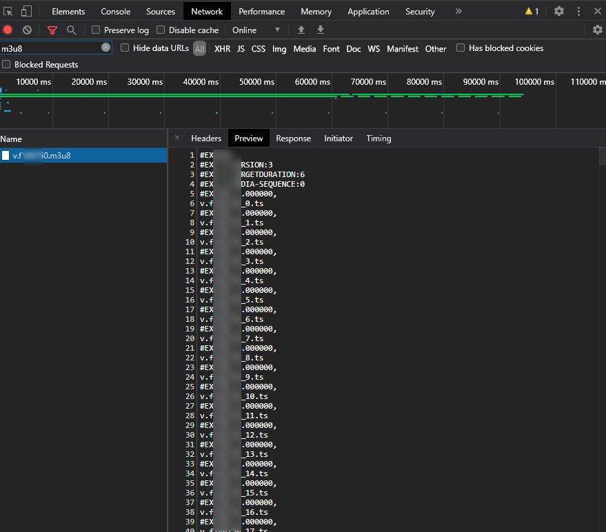
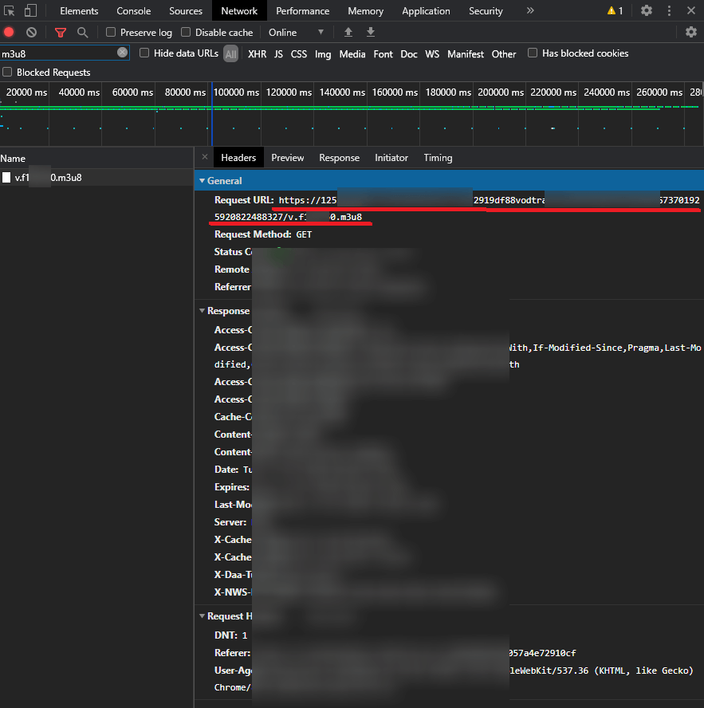
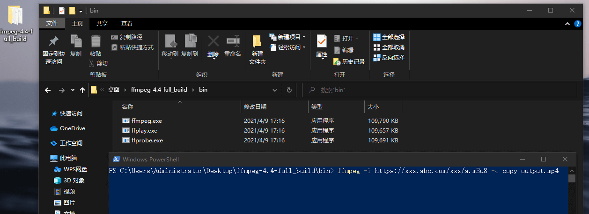

如何下载 ts 流媒体视频
目录
有些网页上的视频是分成多个 ts 片段的，无法被 chrome的 各种嗅探器插件捕获，但通过 F12 开发工具监测网络（Network）时，在过滤器中输入 m3u8，可以发现一个独立的 m3u8 文件，这个文件就是记录了所有 ts 文件片段的一个播放列表。

文件内容大致像这样：

如果没有发现独立的 m3u8 文件，有可能每一个 ts 文件的地址中也是含有这个 m3u8 文件的名称的。把这个 m3u8 文件的完整地址截取出来。针对这种情况，我就不具体举例了，因为我还没遇到过。
到 header tab 里，复制一下这个 m3u8 文件的完整 url ，画红线的这部分就是。

假设这个地址是：https://xxx.abc.com/xxx/a.m3u8
可以使用ffmpeg（FFmpeg）命令下载合并输出为一个视频文件
ffmpeg -i https://xxx.abc.com/xxx/a.m3u8 -c copy output.mp4
